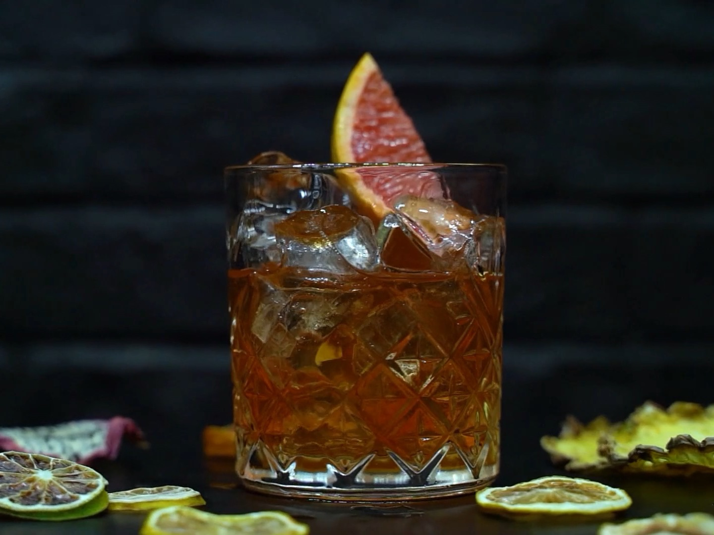
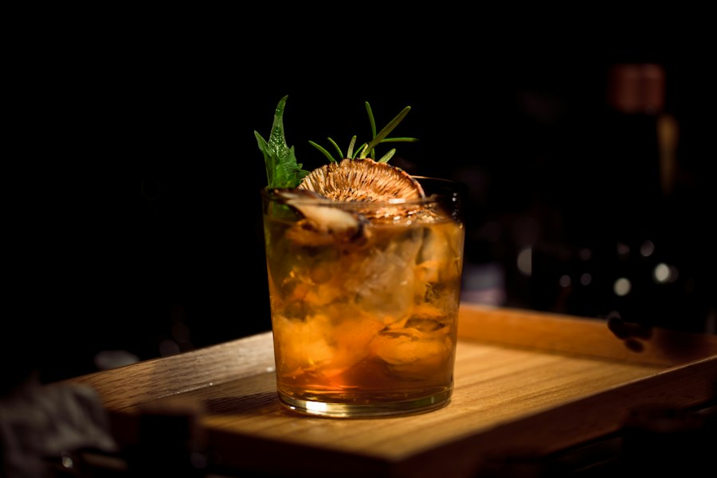
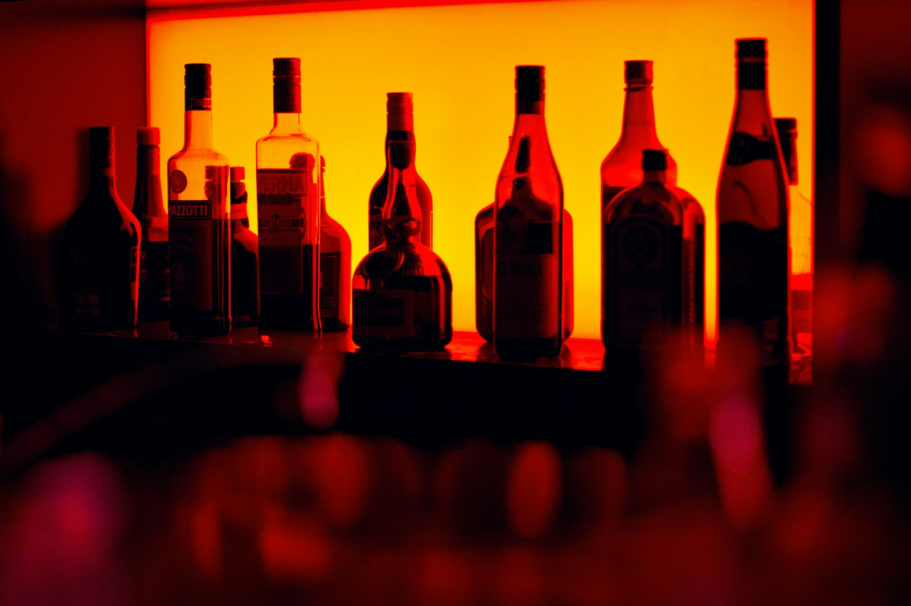
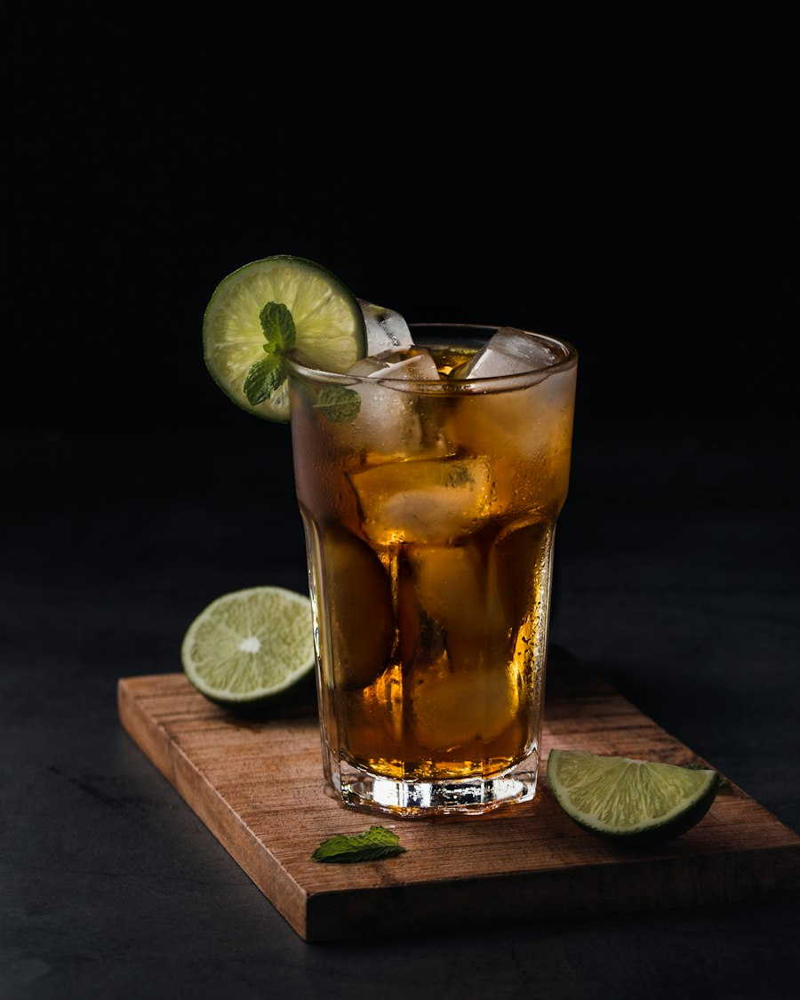
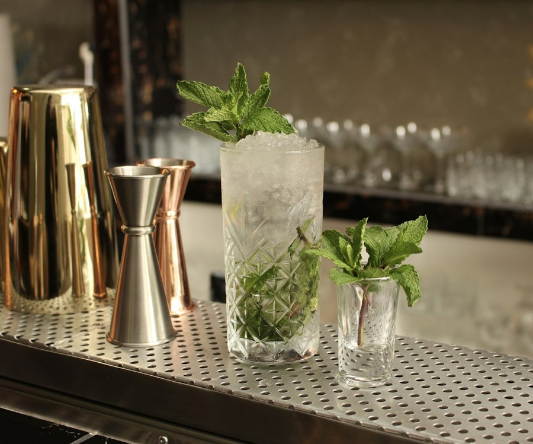
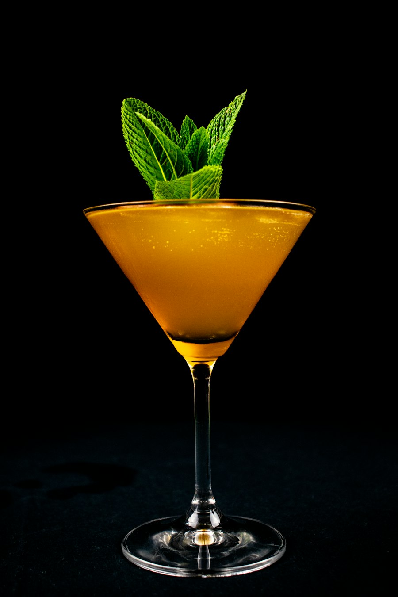
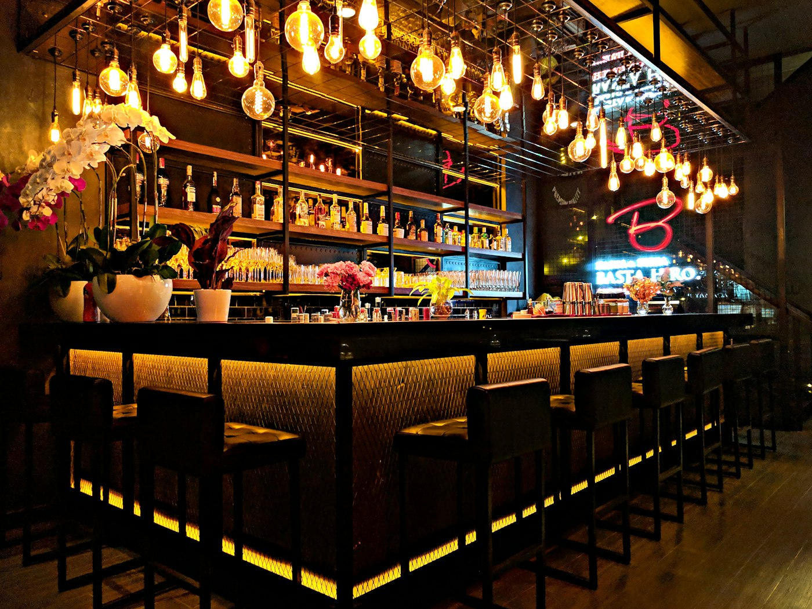
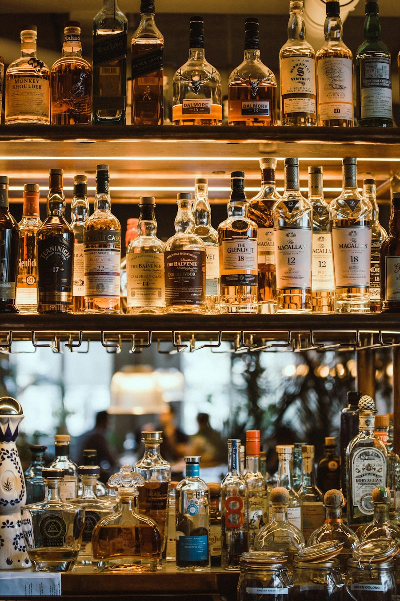
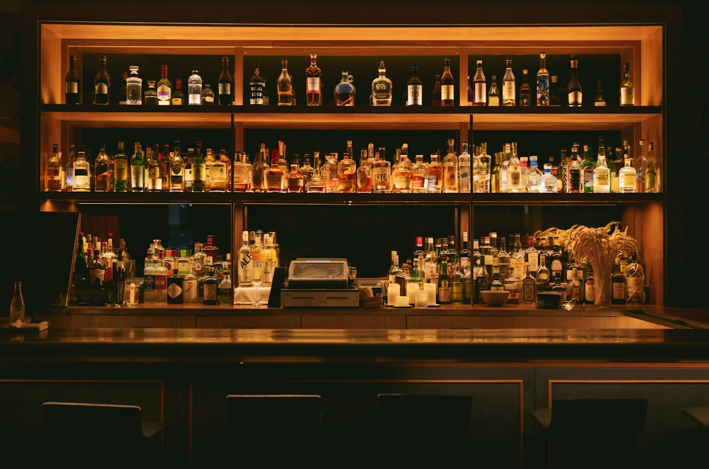

Un bancone, poche sedute, nessuna fretta.
Aqua nasce dall'idea che un cocktail sia una conversazione: tra chi lo prepara e chi lo beve, tra un distillato e la stagione che lo accompagna. Lavoriamo con produttori vicini, sciroppi fatti in casa e ghiaccio limpido tagliato a mano, ogni giorno.
- 24
- coperti, non uno di più
- 12
- signature in carta, ogni stagione
- 0
- preparati industriali


«Il ghiaccio è l'ingrediente che nessuno nota, finché non è perfetto.»
Tre gesti, ogni volta.
Non abbiamo segreti, solo pazienza. Ogni drink passa dalle stesse mani e dagli stessi tre momenti.
-

Il ghiaccio
Blocchi limpidi congelati lentamente per quarantotto ore, poi tagliati a mano al momento. Si scioglie piano e non annacqua.
-

La misura
Ogni ingrediente pesato al grammo, ogni mescolata contata. La precisione è ciò che rende un classico, classico.
-

Il servizio
Vetro raffreddato, una guarnizione sola, servito al bancone con il racconto di ciò che state per bere.
Luce bassa, ottone, legno scuro.
Un'unica sala raccolta attorno al bancone. Si viene per un drink, si resta per la conversazione.



Vi aspettiamo al bancone.
Niente prenotazioni: i posti si assegnano in ordine di arrivo. Il momento più tranquillo è subito dopo l'apertura.
Corso Umberto I, 31 Indicazioni
Orari
| Lunedì | Chiuso |
|---|---|
| Martedì — Venerdì | 17:00 — 22:00 |
| Sabato — Domenica | 22:00 — 02:00 |